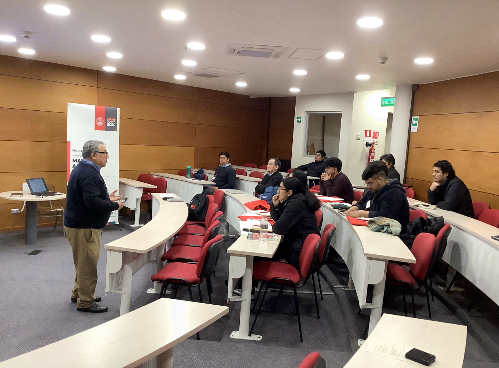
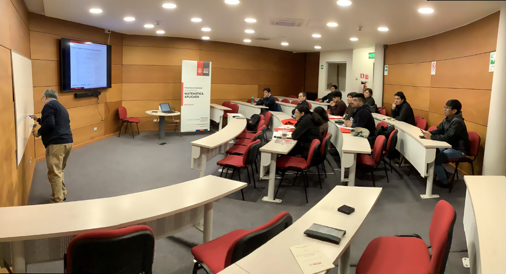
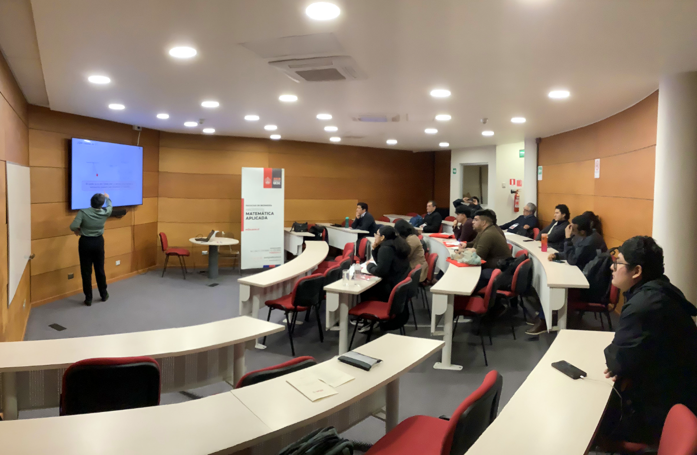
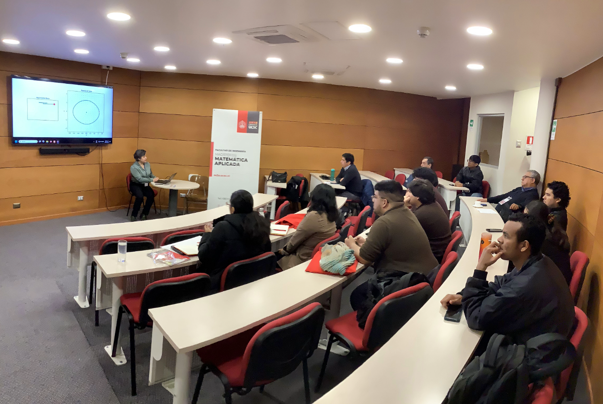
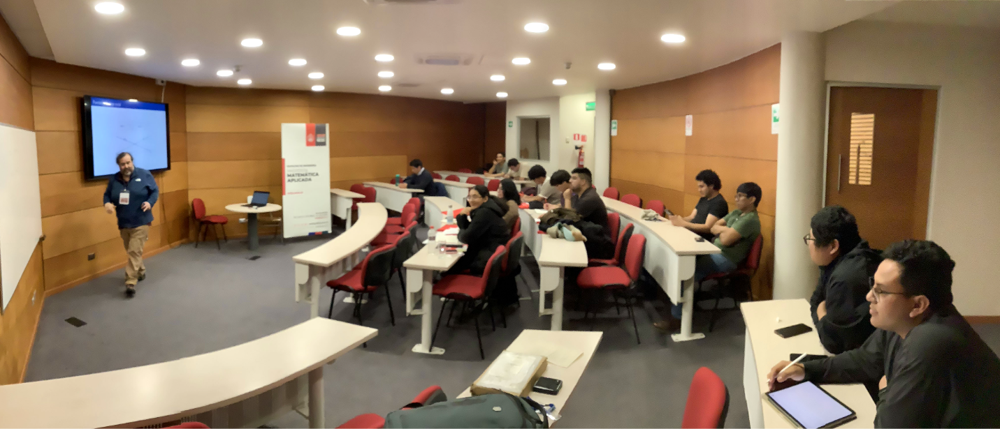
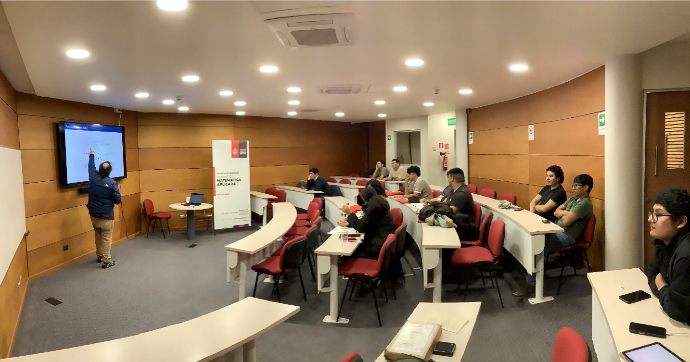
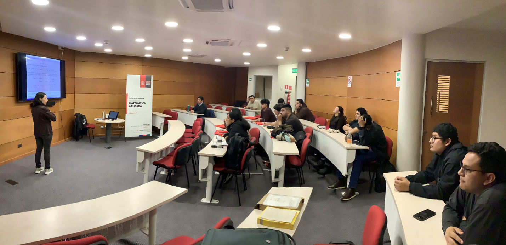
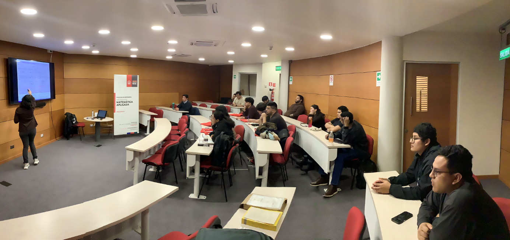

Escuela de Matemática Aplicada, Primavera 2026 (EMA-P2026)
La EMA-P2026 tuvo lugar del 13 al 15 de octubre de 2026 y las actividades realizadas se resumen en el siguiente recuadro:
Cursillos:
Cursillo 1: Introducción a los Sistemas Dinámicos.
Curso del área de especialización en Sistemas Dinámicos.
Expositor: Dr. Marco Uribe.
Cursillo 2: Aproximación Polinomial a Trozos Unidimensional.
Curso del área de especialización en Análisis Numérico de Ecuaciones Diferenciales Parciales.
Expositor: Dr. Tomás Barrios.
Charlas:
Charla 1: ¿Puede una Ecuación Diferencial Generar un Comportamiento Impredecible?.
Expositor: Dra. Johanna García.
Charla 2: Un Método de Elementos Finitos Mixtos Basado en Pseudoesfuerzo que Conserva Momentum y Masa para el Problema de Stokes.
Expositor: Dra. Jessika Camaño.
Charla 3: Un Método de Elementos Finitos Mixtos Basado en Antisimetría para Flujos Magnetohidrodinámicos Estacionarios en Medios Altamente Porosos.
Expositor: Mag. Lady Angelo.
Graduada del programa Magíster en Matemática Aplicada, UCSC.
Charla 4: Existencia y Estabilidad de Órbitas Periódicas a través del Método de Melnikov y Melnikov Subarmónico.
Expositor: Mag. Eduardo Rubilar.
Graduado del programa Magíster en Matemática Aplicada, UCSC.
Descarga Brochure con el Programa de Actividades
Comité Organizador: Sergio Caucao, Luis Gatica, y Jhon Vidarte.
Cursillo 1: Introducción a los Sistemas Dinámicos.
Curso del área de especialización en Sistemas Dinámicos.
Expositor: Dr. Marco Uribe.
Cursillo 2: Aproximación Polinomial a Trozos Unidimensional.
Curso del área de especialización en Análisis Numérico de Ecuaciones Diferenciales Parciales.
Expositor: Dr. Tomás Barrios.
Charlas:
Charla 1: ¿Puede una Ecuación Diferencial Generar un Comportamiento Impredecible?.
Expositor: Dra. Johanna García.
Charla 2: Un Método de Elementos Finitos Mixtos Basado en Pseudoesfuerzo que Conserva Momentum y Masa para el Problema de Stokes.
Expositor: Dra. Jessika Camaño.
Charla 3: Un Método de Elementos Finitos Mixtos Basado en Antisimetría para Flujos Magnetohidrodinámicos Estacionarios en Medios Altamente Porosos.
Expositor: Mag. Lady Angelo.
Graduada del programa Magíster en Matemática Aplicada, UCSC.
Charla 4: Existencia y Estabilidad de Órbitas Periódicas a través del Método de Melnikov y Melnikov Subarmónico.
Expositor: Mag. Eduardo Rubilar.
Graduado del programa Magíster en Matemática Aplicada, UCSC.
Descarga Brochure con el Programa de Actividades
Comité Organizador: Sergio Caucao, Luis Gatica, y Jhon Vidarte.
A continuación se presentan algunas fotos de la EMA-P2026:


Día 1: Bienvenida e Inicio de Cursillos y Charlas















